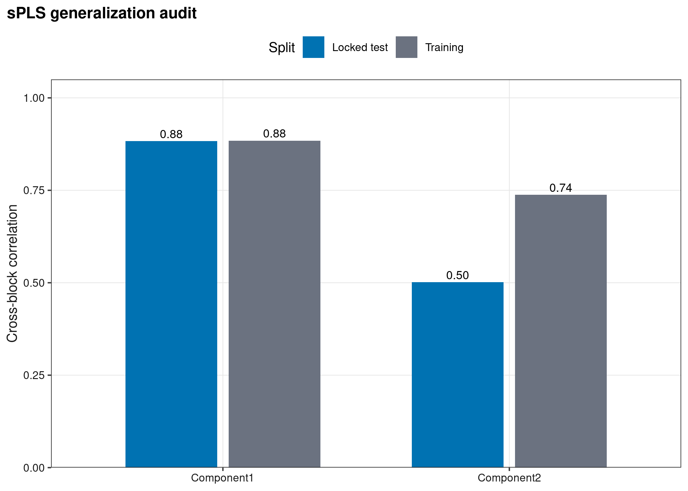
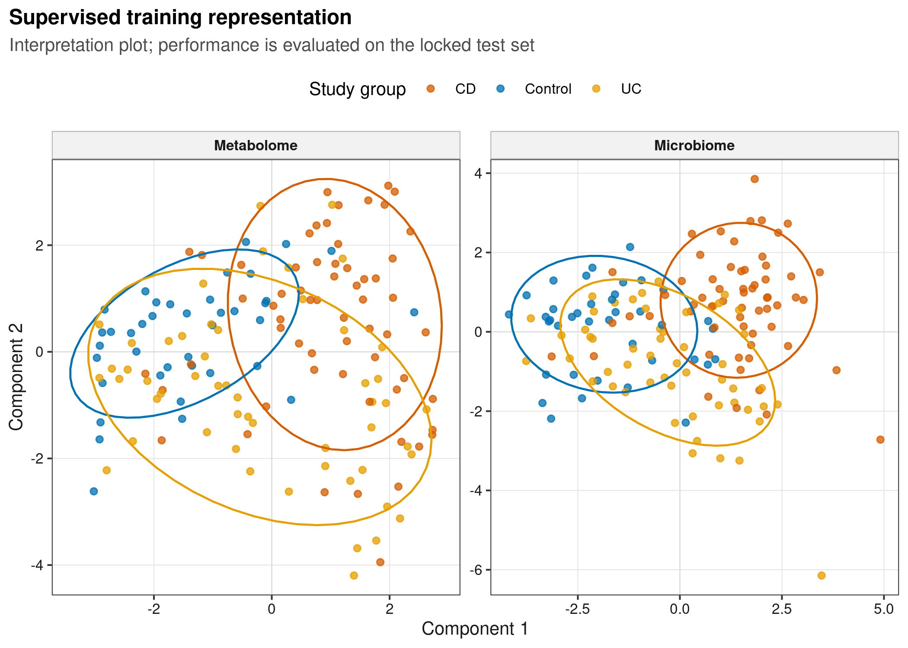
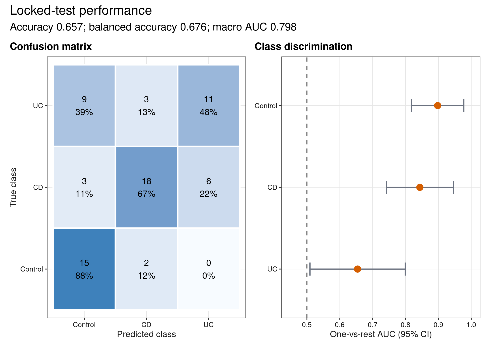
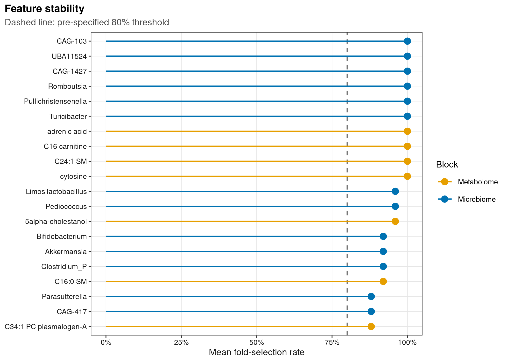

options(timeout = 600)
data_url <- "https://raw.githubusercontent.com/petemeng/microbiome-best-practices/3cb6a817e0c73ab7ecbec1cedc1ad80cbb9ecfaa/"
input_files <- c(
"scripts/run_article47_diablo.R",
"data/small/paired-ibd-multiomics/metabolite-annotation.tsv",
"data/small/paired-ibd-multiomics/metabolites.tsv",
"data/small/paired-ibd-multiomics/metadata.tsv",
"data/small/paired-ibd-multiomics/otutab.tsv",
"data/small/paired-ibd-multiomics/source-summary.json",
"data/small/paired-ibd-multiomics/taxonomy.tsv"
)
for (path in input_files) {
dir.create(dirname(path), recursive = TRUE, showWarnings = FALSE)
if (!file.exists(path)) download.file(paste0(data_url, path), path, mode = "wb", quiet = TRUE)
}sPLS/DIABLO（mixOmics）
sPLS/DIABLO 找到的是协同变化，不自动等于机制
Singh et al. (2019)用 DIABLO 展示 supervised multi-omics integration、sample plots、circos/loadings 与 prediction performance。以下分析使用 Franzosa et al. (2019) 的公开 IBD 配对数据，同时检查 cross-block generalization、DIABLO scores、锁定测试集 confusion/AUC 与 feature stability。
重要先给结论
sPLS component 1 的跨 block correlation 从 training 的 0.884 保持到 test 的 0.883；component 2 从 0.738 降到 0.502。DIABLO 在 67 个 锁定测试集 samples 上 accuracy 0.657、balanced accuracy 0.676、macro one-vs-rest AUC 0.798；UC AUC 只有 0.654。模型能概括部分跨组学结构，但还不够作为临床分类器。
跨组学相关很高，为什么分类仍然有限？
sPLS 寻找的是两个数据块的共同变化，而 DIABLO 还使用分组标签；强共同梯度未必是区分疾病亚型所需的梯度。本例 component 1 的测试相关仍为 0.883，但 UC AUC 只有 0.654，说明“组学对齐”与“分类有用”不能相互替代。应分别评价整合目标和预测目标。
两个数据块还可能只是都在反映同一批次或诊断差异。需要将联合模型与只用菌群、只用代谢组以及适当基础协变量的模型在相同划分下比较，才能判断第二种组学是否增加信息。该比较若尚未执行，就不能宣称多组学优于单组学。相关特征往往可互相替代，因此单个特征选择率低与潜变量表现稳定可以同时出现，不宜只发布一次拟合选出的“稳定标志物”。
下载并读取本次分析的数据
需要 R，以及 ggplot2、jsonlite、mixOmics、patchwork、ragg、readr、scales、svglite。本次使用配对的微生物组、代谢组和样本信息表；训练和测试样本将在后续代码中分开。
在一个新建的文件夹中运行以下代码，下载文件后按文中的顺序继续分析：
library(ggplot2)
library(patchwork)
set.seed(20260747)
font_pub <- "sans"
pal_pub <- c(
blue = "#0072B2", orange = "#E69F00", green = "#009E73",
vermillion = "#D55E00", purple = "#CC79A7", sky = "#56B4E9",
yellow = "#F0E442", grey = "#6B7280"
)
scale_color_pub <- function(..., values = unname(pal_pub)) {
ggplot2::scale_color_manual(..., values = values)
}
scale_fill_pub <- function(..., values = unname(pal_pub)) {
ggplot2::scale_fill_manual(..., values = values)
}
theme_pub <- function(base_size = 10, base_family = font_pub) {
ggplot2::theme_bw(base_size = base_size, base_family = base_family) +
ggplot2::theme(
panel.grid.minor = ggplot2::element_blank(),
panel.grid.major = ggplot2::element_line(colour = "#E6E6E6", linewidth = 0.25),
axis.text = ggplot2::element_text(colour = "#1A1A1A"),
axis.title = ggplot2::element_text(colour = "#1A1A1A"),
plot.title.position = "plot",
plot.title = ggplot2::element_text(face = "bold", size = ggplot2::rel(1.15)),
plot.subtitle = ggplot2::element_text(colour = "#4D4D4D"),
plot.caption = ggplot2::element_text(colour = "#666666", hjust = 0),
strip.background = ggplot2::element_rect(fill = "#F2F2F2", colour = "#B3B3B3"),
strip.text = ggplot2::element_text(face = "bold"),
legend.key = ggplot2::element_blank(), legend.position = "top"
)
}
save_pub <- function(plot, file_base, width = 89, height = 70, units = "mm", dpi = 600) {
dir.create(dirname(file_base), recursive = TRUE, showWarnings = FALSE)
ggplot2::ggsave(paste0(file_base, ".pdf"), plot, width = width, height = height,
units = units, device = grDevices::cairo_pdf, family = font_pub, bg = "white")
ggplot2::ggsave(paste0(file_base, ".svg"), plot, width = width, height = height,
units = units, device = svglite::svglite, bg = "white")
ggplot2::ggsave(paste0(file_base, ".png"), plot, width = width, height = height,
units = units, dpi = dpi, device = ragg::agg_png, bg = "white")
ggplot2::ggsave(paste0(file_base, ".tiff"), plot, width = width, height = height,
units = units, dpi = dpi, device = ragg::agg_tiff,
compression = "lzw", bg = "white")
invisible(plot)
}读取配对数据并固定 train/test split
read_keyed_tsv <- function(path) {
x <- readr::read_tsv(path, show_col_types = FALSE, progress = FALSE,
name_repair = "minimal", na = character())
ids <- as.character(x[[1L]])
stopifnot(!anyDuplicated(ids))
out <- as.data.frame(x[-1L], check.names = FALSE)
rownames(out) <- ids
out
}
data_dir <- "data/small/paired-ibd-multiomics"
otutab_raw <- read_keyed_tsv(file.path(data_dir, "otutab.tsv"))
taxonomy <- read_keyed_tsv(file.path(data_dir, "taxonomy.tsv"))
metadata <- read_keyed_tsv(file.path(data_dir, "metadata.tsv"))
metabolites_raw <- read_keyed_tsv(file.path(data_dir, "metabolites.tsv"))
metabolite_annotation <- read_keyed_tsv(
file.path(data_dir, "metabolite-annotation.tsv")
)
otutab <- as.matrix(data.frame(lapply(otutab_raw, as.numeric), check.names = FALSE))
metabolites <- as.matrix(data.frame(
lapply(metabolites_raw, as.numeric), check.names = FALSE
))
rownames(otutab) <- rownames(otutab_raw)
rownames(metabolites) <- rownames(metabolites_raw)
metadata$StudyGroup <- factor(metadata$StudyGroup, levels = c("Control", "CD", "UC"))
stopifnot(
nrow(otutab) == 250L, nrow(metabolites) == 277L,
identical(colnames(otutab), rownames(metadata)),
identical(colnames(metabolites), rownames(metadata))
)
set.seed(20260726)
train_ids <- unlist(lapply(levels(metadata$StudyGroup), function(group_name) {
ids <- rownames(metadata)[metadata$StudyGroup == group_name]
sample(ids, floor(0.70 * length(ids)), replace = FALSE)
}), use.names = FALSE)
train_ids <- rownames(metadata)[rownames(metadata) %in% train_ids]
test_ids <- setdiff(rownames(metadata), train_ids)
split_ledger <- rbind(
Train = table(metadata[train_ids, "StudyGroup"]),
Test = table(metadata[test_ids, "StudyGroup"])
)
stopifnot(nrow(metadata) == 220L, length(train_ids) == 153L, length(test_ids) == 67L)
split_ledger Control CD UC
Train 39 61 53
Test 17 27 23下载完整 R 脚本。脚本包含数据下载、计算和图形导出。
首次使用时安装 R 包
install.packages(c(
"BiocManager", "ggplot2", "jsonlite", "patchwork", "pROC", "ragg",
"readr", "scales", "svglite", "systemfonts"
))
BiocManager::install("mixOmics")共同变化、监督分离与预测验证是三个任务
用 sPLS 筛选解释跨组学共同变化的特征
对 standardized blocks \(X\) 与 \(Y\)，PLS 寻找 \(u=Xa\)、\(v=Yb\) 使 covariance 最大；sPLS 对 \(a,b\) 加稀疏约束，只保留少数 features。高 training correlation 可能来自过拟合，所以必须把 training loadings 原样投影到 test set 再算 correlation。
用 DIABLO 同时整合多组学数据与结局分组
DIABLO 是 supervised block-sPLS-DA。design matrix 的 off-diagonal value 控制“让两个 blocks 彼此相关”与“让 components 分离 outcome”之间的权衡。本文固定 0.10，优先分类而不过度强迫两个数据块一致。
keepX 是必须调的模型复杂度
每个 block、每个 component 保留多少 features 会显著改变结果。本文在 training set 内对每个 block 搜索 5/10/15，目标为 5-fold × 3 repeats 的 balanced error rate（BER）；test labels 不参与筛选、scaling 或 tuning。
同时报告区分能力与特征稳定性
三分类 accuracy 会被样本不平衡影响，因此同时给 balanced accuracy、BER 和 one-vs-rest AUC。feature 被一次 final fit 选中不代表稳定；本文再统计 5-fold × 5 repeated CV 中的平均选择率。
深入：为什么漂亮的 score plot 不是模型验证
supervised model 的坐标就是为分开 training labels 而学习，training score plot 天然乐观。它适合解释模型学到了什么，不适合证明泛化。性能结论只能来自 nested/repeated cross-validation、锁定测试集 set 或真正 external cohort；若用 test set 再挑 component 或 cutoff，它就不再是测试集。
在训练集选择潜变量与特征
锁定测试集，再拟合与调参
从配对数据重新完成训练集筛选、sPLS、DIABLO 调参、重复交叉验证和锁定测试集评估。
run_analysis <- function(command, args) {
output <- system2(command, args, stdout = TRUE, stderr = TRUE)
status <- attr(output, "status")
if (!is.null(status) && status != 0L) stop(paste(tail(output, 20), collapse = "\n"))
invisible(output)
}
run_analysis(file.path(R.home("bin"), "Rscript"), c("--vanilla", "scripts/run_article47_diablo.R"))完整计算脚本：run_article47_diablo.R。
过滤与标准化参数只从训练集估计
min_train_samples <- ceiling(0.10 * length(train_ids))
prevalent_microbes <- rownames(otutab)[
rowSums(otutab[, train_ids, drop = FALSE] > 0) >= min_train_samples
]
train_log <- log(t(otutab[prevalent_microbes, train_ids, drop = FALSE]) + 0.5)
train_clr_all <- train_log - rowMeans(train_log)
microbe_features <- names(sort(apply(train_clr_all, 2, var), decreasing = TRUE))[1:60]
train_metabolite_all <- log1p(t(metabolites[, train_ids, drop = FALSE]))
metabolite_features <- names(sort(
apply(train_metabolite_all, 2, var), decreasing = TRUE
))[1:80]
clr_transform <- function(x) {
logged <- log(t(x) + 0.5)
logged - rowMeans(logged)
}
scale_from_train <- function(train, test) {
center <- colMeans(train)
spread <- apply(train, 2, sd)
spread[!is.finite(spread) | spread == 0] <- 1
list(
train = sweep(sweep(train, 2, center, "-"), 2, spread, "/"),
test = sweep(sweep(test, 2, center, "-"), 2, spread, "/")
)
}
microbe_scaled <- scale_from_train(
clr_transform(otutab[microbe_features, train_ids, drop = FALSE]),
clr_transform(otutab[microbe_features, test_ids, drop = FALSE])
)
metabolite_scaled <- scale_from_train(
log1p(t(metabolites[metabolite_features, train_ids, drop = FALSE])),
log1p(t(metabolites[metabolite_features, test_ids, drop = FALSE]))
)
train_blocks <- list(
Microbiome = microbe_scaled$train,
Metabolome = metabolite_scaled$train
)
test_blocks <- list(
Microbiome = microbe_scaled$test,
Metabolome = metabolite_scaled$test
)sPLS：训练后原样投影 锁定测试集
模型调用与参数
library(mixOmics)
spls_fit <- spls(
train_blocks$Microbiome, train_blocks$Metabolome,
ncomp = 2, keepX = c(15, 15), keepY = c(20, 20),
mode = "regression", scale = FALSE
)
test_x <- test_blocks$Microbiome %*% spls_fit$loadings$X
test_y <- test_blocks$Metabolome %*% spls_fit$loadings$Y
vapply(1:2, function(k) cor(test_x[, k], test_y[, k]), numeric(1))DIABLO：training-only tuning、repeated CV、一次 test prediction
模型调用与参数
train_group <- droplevels(metadata[train_ids, "StudyGroup"])
test_group <- factor(metadata[test_ids, "StudyGroup"], levels = levels(train_group))
design <- matrix(0.10, 2, 2, dimnames = list(names(train_blocks), names(train_blocks)))
diag(design) <- 0
set.seed(20260726)
tuned <- tune.block.splsda(
X = train_blocks, Y = train_group, ncomp = 2,
test.keepX = list(Microbiome = c(5, 10, 15), Metabolome = c(5, 10, 15)),
validation = "Mfold", folds = 5, nrepeat = 3,
dist = "centroids.dist", measure = "BER", design = design,
scale = FALSE, progressBar = FALSE
)
fit <- block.splsda(
X = train_blocks, Y = train_group, ncomp = 2,
keepX = tuned$choice.keepX, design = design, scale = FALSE
)
set.seed(20260726)
cv <- perf(fit, validation = "Mfold", folds = 5, nrepeat = 5,
dist = "centroids.dist", progressBar = FALSE)
prediction <- predict(fit, newdata = test_blocks, dist = "centroids.dist")
test_class <- prediction$WeightedVote$centroids.dist[, 2]完整固定运行命令为：
result_dir <- "results/47-spls-diablo"
spls_correlations <- readr::read_tsv(
file.path(result_dir, "spls-correlations.tsv"), show_col_types = FALSE
)
diablo_scores <- readr::read_tsv(
file.path(result_dir, "diablo-train-scores.tsv"), show_col_types = FALSE
)
test_predictions <- readr::read_tsv(
file.path(result_dir, "test-predictions.tsv"), show_col_types = FALSE
)
test_auc <- readr::read_tsv(
file.path(result_dir, "test-auc.tsv"), show_col_types = FALSE
)
stability <- readr::read_tsv(
file.path(result_dir, "diablo-selection-stability.tsv"), show_col_types = FALSE
)
diablo_summary <- jsonlite::read_json(
file.path(result_dir, "summary.json"), simplifyVector = TRUE
)
stopifnot(
nrow(test_predictions) == 67L,
abs(diablo_summary$test_accuracy - 0.6567164) < 1e-4,
abs(diablo_summary$test_macro_auc - 0.7984386) < 1e-4,
diablo_summary$stable_selected_features_rate_ge_0_8 == 26L
)
diablo_summary[c(
"repeated_cv_weighted_vote_ber_component2", "test_accuracy",
"test_balanced_accuracy", "test_macro_auc"
)]$repeated_cv_weighted_vote_ber_component2
[1] 0.3772
$test_accuracy
[1] 0.6567
$test_balanced_accuracy
[1] 0.6758
$test_macro_auc
[1] 0.7984潜变量分离、分类性能与特征稳定性
- training-only preprocessing。prevalence、variance filter、center、scale、
keepX和 component count 都不能看 test labels。 - 不要只报 training score plot。本例 component 2 correlation 从 0.738 降到 0.502；这种 shrinkage 正是 test projection 的价值。
- 类别性能拆开看。Control/CD AUC 分别约 0.898/0.844，但 UC 只有 0.654；macro AUC 不能掩盖困难类别。
- CV 与 test 都要留档。repeated-CV BER 为 0.377，test BER 为 0.324；两者接近但不相等是正常 sampling variation。
- feature stability 优先于单次 loading。26 个 block-component features 的 selection rate ≥0.80；其余候选应降级为 exploratory。
- 外部验证仍缺失。这个 locked split 只是 internal holdout；clinical claim 还需要独立 cohort、calibration、decision analysis 与预注册 threshold。
警告模型不是生物机制
DIABLO loading 的正负只定义 latent component direction；不能直接解释为某菌促进某代谢物，也不能把 supervised component 当 causal pathway。
用测试表现检查潜变量分离是否可信
图 1：sPLS 的 train-to-test generalization
spls_long <- rbind(
data.frame(Component = spls_correlations$Component, Split = "Training",
Correlation = spls_correlations$TrainCorrelation),
data.frame(Component = spls_correlations$Component, Split = "Locked test",
Correlation = spls_correlations$TestCorrelation)
)
p47_1 <- ggplot(spls_long, aes(Component, Correlation, fill = Split)) +
geom_col(position = position_dodge(width = 0.72), width = 0.64) +
geom_text(aes(label = sprintf("%.2f", Correlation)),
position = position_dodge(width = 0.72), vjust = -0.35,
size = 3, family = font_pub) +
scale_fill_manual(values = c(
Training = unname(pal_pub["grey"]),
`Locked test` = unname(pal_pub["blue"])
)) +
scale_y_continuous(limits = c(0, 1), expand = expansion(mult = c(0, 0.05))) +
labs(x = NULL, y = "Cross-block correlation", fill = "Split",
title = "sPLS generalization audit") + theme_pub()
save_pub(p47_1, "figures/47-spls-diablo/47-1-spls-generalization", 89, 70)
p47_1
图 2：DIABLO training scores（只用于解释）
group_colors <- c(
Control = unname(pal_pub["blue"]),
CD = unname(pal_pub["vermillion"]),
UC = unname(pal_pub["orange"])
)
p47_2 <- ggplot(diablo_scores, aes(Component1, Component2, colour = StudyGroup)) +
geom_hline(yintercept = 0, colour = "#DDDDDD", linewidth = 0.3) +
geom_vline(xintercept = 0, colour = "#DDDDDD", linewidth = 0.3) +
geom_point(size = 1.5, alpha = 0.76) +
stat_ellipse(linewidth = 0.55, level = 0.80, show.legend = FALSE) +
facet_wrap(~ Block, scales = "free") +
scale_color_manual(values = group_colors) +
labs(x = "Component 1", y = "Component 2", colour = "Study group",
title = "Supervised training representation",
subtitle = "Interpretation plot; performance is evaluated on the locked test set") +
theme_pub()
save_pub(p47_2, "figures/47-spls-diablo/47-2-diablo-scores", 180, 82)
p47_2
图 3：留出测试集的混淆矩阵与各类别 AUC
confusion <- as.data.frame(table(
Truth = factor(test_predictions$Truth, levels = c("Control", "CD", "UC")),
Predicted = factor(test_predictions$Predicted, levels = c("Control", "CD", "UC"))
))
confusion$WithinTruth <- ave(confusion$Freq, confusion$Truth, FUN = function(x) x / sum(x))
p_confusion <- ggplot(confusion, aes(Predicted, Truth, fill = WithinTruth)) +
geom_tile(colour = "white", linewidth = 0.8) +
geom_text(aes(label = sprintf("%d\n%.0f%%", Freq, 100 * WithinTruth)),
family = font_pub, size = 3.2) +
scale_fill_gradient(low = "#F7FBFF", high = pal_pub["blue"], limits = c(0, 1)) +
labs(x = "Predicted class", y = "True class", fill = "Row fraction",
title = "Confusion matrix") + theme_pub(9) + theme(legend.position = "none")
test_auc$Class <- factor(test_auc$Class, levels = rev(c("Control", "CD", "UC")))
p_auc <- ggplot(test_auc, aes(AUC, Class)) +
geom_vline(xintercept = 0.5, linetype = 2, colour = "#777777") +
geom_errorbarh(aes(xmin = CILower, xmax = CIUpper), height = 0.16,
colour = pal_pub["grey"], linewidth = 0.55) +
geom_point(size = 2.8, colour = pal_pub["vermillion"]) +
scale_x_continuous(limits = c(0.45, 1), breaks = seq(0.5, 1, 0.1)) +
labs(x = "One-vs-rest AUC (95% CI)", y = NULL,
title = "Class discrimination") + theme_pub(9) + theme(legend.position = "none")
p47_3 <- p_confusion + p_auc + plot_annotation(
title = "Locked-test performance",
subtitle = "Accuracy 0.657; balanced accuracy 0.676; macro AUC 0.798"
)
save_pub(p47_3, "figures/47-spls-diablo/47-3-test-performance", 180, 82)
p47_3
图 4：repeated-CV feature stability
stable_plot <- stability[order(-stability$FoldSelectionRate), ]
stable_plot <- stable_plot[!duplicated(paste(stable_plot$Block, stable_plot$FeatureID)), ]
stable_plot <- head(stable_plot, 20)
stable_plot$Label <- ifelse(
nchar(stable_plot$DisplayName) > 28,
paste0(substr(stable_plot$DisplayName, 1, 25), "..."),
stable_plot$DisplayName
)
stable_plot$Label <- factor(stable_plot$Label, levels = rev(stable_plot$Label))
p47_4 <- ggplot(stable_plot, aes(FoldSelectionRate, Label, colour = Block)) +
geom_vline(xintercept = 0.80, linetype = 2, colour = "#777777") +
geom_segment(aes(x = 0, xend = FoldSelectionRate, yend = Label), linewidth = 0.6) +
geom_point(size = 2.7) +
scale_color_manual(values = c(
Microbiome = unname(pal_pub["blue"]),
Metabolome = unname(pal_pub["orange"])
)) +
scale_x_continuous(limits = c(0, 1), labels = scales::percent) +
labs(x = "Mean fold-selection rate", y = NULL, colour = "Block",
title = "Feature stability", subtitle = "Dashed line: pre-specified 80% threshold") +
theme_pub(9) + theme(legend.position = "right")
save_pub(p47_4, "figures/47-spls-diablo/47-4-feature-stability", 180, 105)
p47_4
常见坑
注意审稿人最常追问的六件事
- 在全数据上先筛 feature 或标准化，再切 train/test，产生 leakage。
- 用 test set 选择
keepX、component 数或分类距离。 - 只给 supervised training score plot，不给 CV/test performance。
- 只给 overall accuracy，不给 class-wise recall、BER 或 AUC uncertainty。
- 没报告 design matrix、fold 数、repeats、distance 与随机种子。
- 把一次 fit 的 non-zero loadings 当稳定 biomarker。
报告sPLS与DIABLO验证的方法与限制
The 220 paired samples were split once into a stratified training set (n=153) and a locked test set (n=67) using seed 20260726. Prevalence filtering, variance filtering, CLR/log1p transformation parameters and feature standardization were learned using training samples only. Sparse PLS retained 15 microbial and 20 metabolite variables per component; learned loadings were projected without refitting into the test set. DIABLO was fitted using a block-design weight of 0.10 and two components. Block-specific keepX values were selected from {5, 10, 15} by 5-fold cross-validation repeated three times using balanced error rate; performance and selection stability were subsequently estimated by 5-fold cross-validation repeated five times. The locked test set was evaluated once using weighted-vote centroid distance. Accuracy, balanced accuracy, class-specific one-vs-rest AUC with 95% confidence intervals, and feature selection stability were reported.
将sPLS与DIABLO验证用于自己的研究
- 替换三件套、
metabolites.tsv和 annotation；两个 blocks 必须使用完全相同且同序的 sample IDs。 - 把
StudyGroup换成你的 outcome；若为 repeated measures，按 subject 切分，绝不能让同一人同时进入 train 与 test。 - 在 training data 内重新决定 prevalence、feature count、
keepXgrid、component 数和 design matrix，不能照抄本文数字。 - 类别严重不平衡时用 stratified folds、BER/PR-AUC，并保存每折 prediction；小样本优先 nested CV 而不是再切一个很小的 test set。
- 发表 biomarker claim 前，增加独立 cohort、calibration、预定义 clinical comparator 和 decision-curve analysis。
参考
- Singh A, et al. DIABLO: an integrative approach for identifying key molecular drivers from multi-omics assays. Bioinformatics. 2019. https://doi.org/10.1093/bioinformatics/bty1054
- Rohart F, et al. mixOmics: An R package for ’omics feature selection and multiple data integration. PLoS Computational Biology. 2017. https://doi.org/10.1371/journal.pcbi.1005752
- Franzosa EA, et al. Gut microbiome structure and metabolic activity in inflammatory bowel disease. Nature Microbiology. 2019. https://doi.org/10.1038/s41564-018-0306-4
- mixOmics team. DIABLO documentation. https://mixomics.org/mixdiablo/
- Borenstein Lab. CuratedMetagenomicDataMetabolome. Fixed source commit:
89a519d8c832008fbc6e650453e83e2f04858d02. https://github.com/borenstein-lab/CuratedMetagenomicDataMetabolome